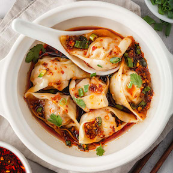

chili oil wonton recipe

Ingredient List:
- 1/3 cup chili oil flakes
- 1/4 cup soy sauce
- 3 tablespoons rice vinegar
- 2 tablespoons sesame oil
- 3 or 4 scallions or green onions
- a quarter of a bundle of cilantro
Instructions:
- First, chop the cilantro and green onions.
- Next, measure the ingredients and combine in a small bowl.
- Finally, enjoy with fresh wontons or use to aid in flavor.